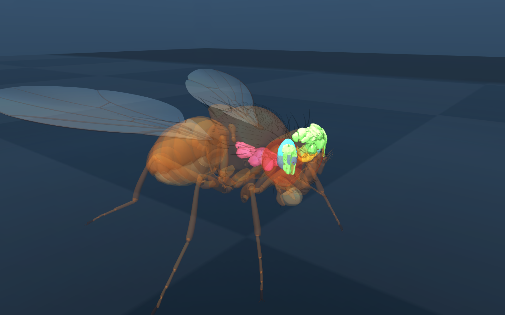

01这是什么官方蝇体 + 官方大脑，跑起来
前面几个阶段你一直在看数据。这一页把它接上身体： 用官方的解剖级蝇体模型当身体，用 MaleCNS 的 166,700 个神经元 / 25,582,938 条连接当脑， 在 MuJoCo 里真的跑起来 —— 脑发脉冲，身体走路。
身体：flybody，由 Google DeepMind 与 HHMI Janelia 合作开发，
收录在 DeepMind 官方的 MuJoCo Menagerie 里（Apache-2.0）。
脑：MaleCNS v1.0，HHMI Janelia FlyEM 发布（CC-BY 4.0）。
所以这套组合不需要你自己拼凑：躯壳和脑来自同一个实验室体系，许可也都允许再发布。
两点必须说在前面：身体模型与脑不是同一只果蝇（一个是建模资产，一个是另一个体的重建）， 而且把脑装进身体这件事本身是工程实现，不是数据。 第 07 节会把这条界线画清楚。
02两块官方拼图The two official parts
🪰 身体 · flybody
解剖级果蝇全身模型：头、胸、腹、两对翅、平衡棒、三对足（含跗节与爪）、 喙与触角，共 68 个刚体 / 85 个网格，总质量约 0.98 mg（模型尺度）。
开发：Google DeepMind × HHMI Janelia；经授权收录进 MuJoCo Menagerie， 与 Turaga Lab 官方仓库同一 commit。
许可 Apache-2.0 · Menagerie/flybody
🧠 大脑 · MaleCNS v1.0
成年雄性果蝇完整中枢神经系统：中央脑 + 视叶 + 腹神经索。 本页用的是你已经在第 3 阶段下载并校验过的同一份文件。
发育：HHMI Janelia FlyEM 等；166,700 个神经元、 25,582,938 条有向连接（两端都是神经元、未设阈值口径）。
许可 CC-BY 4.0 · Berg et al. (2026) Cell 189(18):5504-5526.e15
第三方项目 fly-arena 自己重新解了一遍那两个 feather 文件
（用 SHA-256，和我们当初用官方 MD5 的校验相互独立），
建出的图是 166,700 个神经元 / 25,582,938 条边 ——
与我们在阶段 3 用官方文件数出来的完全一致。
03脑在身体里的位置Where the CNS sits
把 MaleCNS 的神经毡网格按解剖比例缩放进官方蝇体，身体调成半透明 —— 这样能直接看到中枢神经系统在体内的位置。

两部分来自不同个体、不同坐标系（MaleCNS 是纳米级 EM 重建坐标， flybody 是设计坐标系），所以这里是按「体长比例」摆放的，不是把两个坐标系配准。 可以据此讲清拓扑关系（脑在头、VNC 入胸），不能用来量任何距离。
04演示视频Two runs, one control
同一个身体跑两遍：一遍不接脑（脚本控制，作为对照）， 一遍接上 MaleCNS。对比着看，才知道画面里的动作到底是谁产生的。
脚本控制：预先编好的步态程序直接驱动六条腿，脑没有参与。 左上为竞技场俯视，右上为蝇体近景，右下为左右复眼的模拟视野， 叠加层显示时间、脉冲数（这里恒为 0）与步态指令。
166,700 个神经元在跑：复眼的模拟输入送进视叶，全脑 LIF 以 0.1 ms 步长积分， 下行神经元（DNp09 / DNa02）的放电率解码成前进与转向指令，交给身体执行。 叠加层里的 spikes / 10 ms 是这一步的脉冲总数。
两段视频里蝇子的步态是同一位「工程师」写的（六足协调的 CPG 程序）， 脑改变的是速度与转向。所以要看的不是「腿抬得像不像」—— 那是身体模型与步态程序的功劳；要看的是转向是否由神经活动驱动。 这也正是第 07 节要划清的界线。
05实测数字What actually ran
下面每个数都是本机跑出来的，不是估计值。
| 运行 | 仿真时长 | 墙钟耗时 | 脉冲 | 位移 | 视频帧 |
|---|---|---|---|---|---|
| 脚本控制（对照） | 4.0 s | 11.4 s | 0 | 13.6 mm | 121 |
| 接 MaleCNS | 6.0 s | 19.0 s | 4,943,604 | 24.4 mm | 181 |
怎么理解这个速度：全脑 LIF 每 0.1 ms 积一次，166,700 个神经元、 2,558 万条边，全部在 CPU 上。参考学习指南里的 独立复现：脑 + 身体跑 5 秒蝇时间约需 64 秒 —— 与这里的量级一致。
06怎么复现Reproduce it
身体模型与仿真框架来自两个第三方项目，本页只负责把 MaleCNS 接上去。 下面是完整链路。
① 拿身体模型（官方）
# DeepMind MuJoCo Menagerie：只取 flybody，约 134 MB
git clone --depth 1 --filter=blob:none --sparse \
https://github.com/google-deepmind/mujoco_menagerie.git
cd mujoco_menagerie && git sparse-checkout set flybody
② 拿脑（就是第 3 阶段那两个文件）
# 复用已下载并校验过的 feather，另加一个 43 MB 的递质文件
python tools/fetch_flat_connectome.py
③ 用 fly-arena 把两者接起来
# MIT 许可的实验性项目：NeuroMechFly 身体 + MaleCNS + 行为控制器 pip install -e fly-arena # --raw 指向你已有的 feather 目录，避免重复下载 1.1 GB（它会用 SHA-256 重新校验） python -m fly_arena prepare --data arena-data --raw _data # 对照：只有身体，没有脑 python -m fly_arena run --mode body-demo --headless \ --video body-demo.mp4 --seconds 4 # 接上 MaleCNS：166,700 个神经元真的在跑 python -m fly_arena run --mode connectome --headless --data arena-data \ --video connectome.mp4 --seconds 6
Python 3.12、MuJoCo、Numba。渲染用离屏模式即可（macOS 用 MUJOCO_GL=cgl，
Linux 无显示器用 egl）——不需要图形界面，所以服务器上也能出视频。
本机为 Apple Silicon，两个 venv 加起来约 700 MB。
07哪些是测量、哪些是假设Measured vs engineered
这是整个学习指南反复强调的纪律。看这段演示时，请把下面两栏分清楚。
✅ 来自真实数据的
• 神经元数量、连接、突触数：直接读官方 v1.0 文件，已用 SHA-256/MD5 双重校验
• 突触符号：由预测递质映射（GABA / 谷氨酸 / 组胺 → 抑制性，其余 → 兴奋性代理）
• 复眼输入的空间映射：按视叶的解剖连接近似
• 身体形态与质量分布：来自解剖测量
⚠️ 工程假设（不是数据）
• LIF 参数：膜时间常数、阈值、突触增益均为选定值
• 递质符号：受体层面的兴奋/抑制差异、神经调质完全没建模； MaleCNS 里有数千个细胞递质未知，这里一律当兴奋性
• 步态：六足协调的 CPG 是写好的程序，不是从连接组学出来的
• 下行解码：把 DNp09 / DNa02 的放电率映射成前进/转向是线性读出
• 没有学习、没有身体感觉反馈闭环（除了视觉）
接线来自真实重建，这是它的价值；但动力学、感受器映射、动作解码都是工程选择。 所以只能说「用真实连接组驱动的具身仿真」，不能说「重现了果蝇行为」。 fly-arena 自己在元数据里也是这么写："No learned natural behavior."